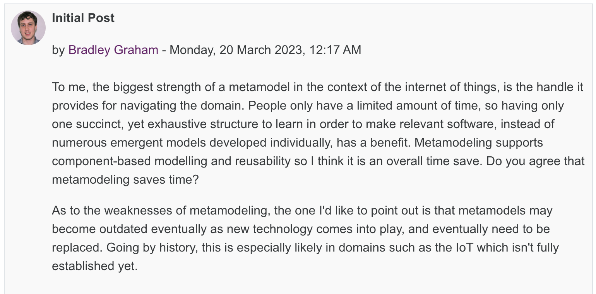
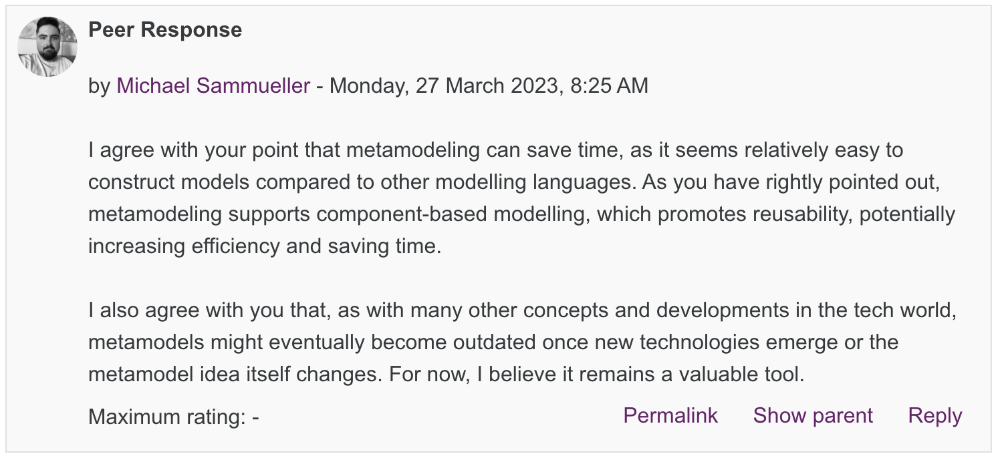
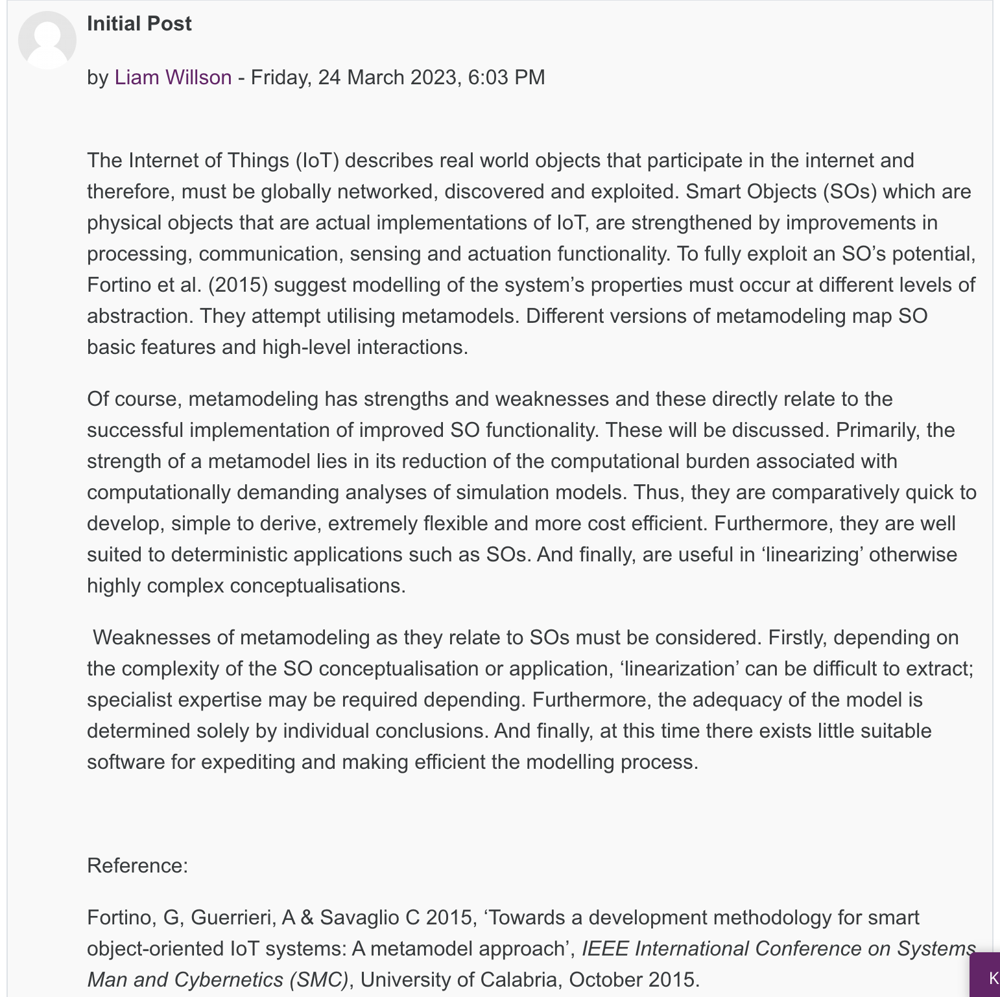
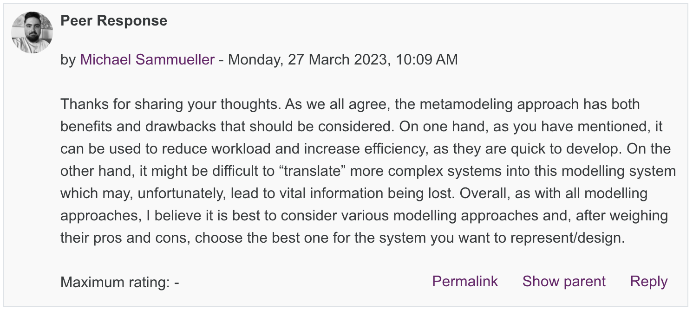
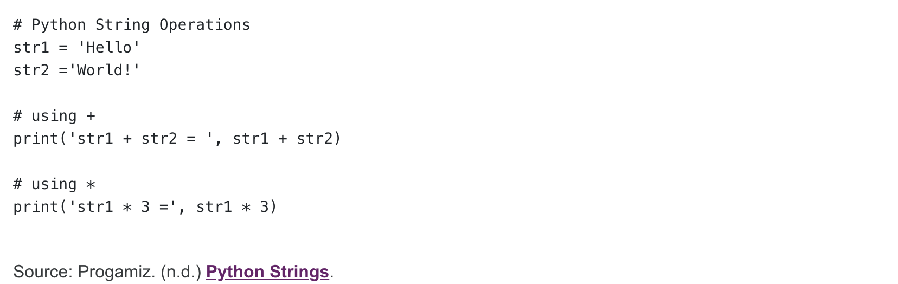
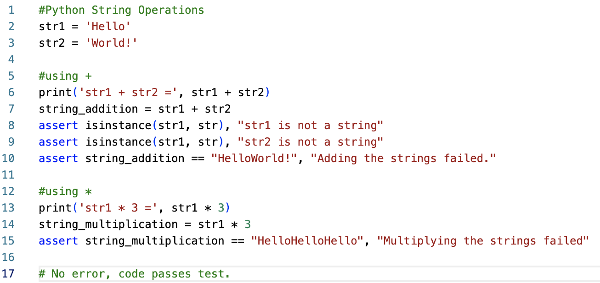
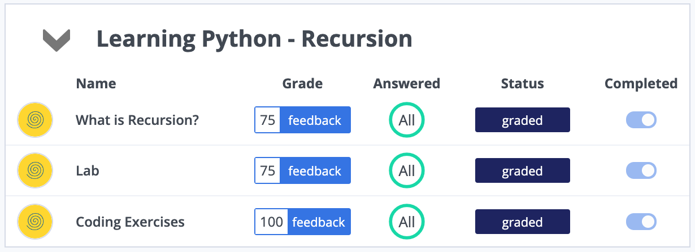
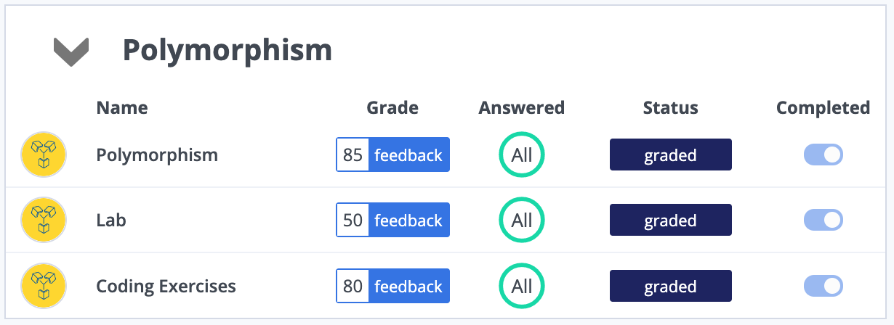

Unit 9: Artefacts
Peer Responses
Task: [...] Respond to at least 2 of your peer's posts.
Peer Post 1
Response 1
Peer Post 2
Response 2
Python Assert Statement
Task: Extend the following program to test accuracy of operations using the assert statement.
With assert statement
Comments
To ensure that the code and it's operations run correctly, we use the assert statement. First, I ensure that the variables we are adding and multiplying are indeed strings. Following this initial test, I ensure that the addition/multiplication results in the correct output. In case any of these do not pass the test, a custom error will be raised advising the user of the error that occured.
Codio
As part of my studies and practice, I completed the "Recursion" and "Polymorphism" units on Codio.
 